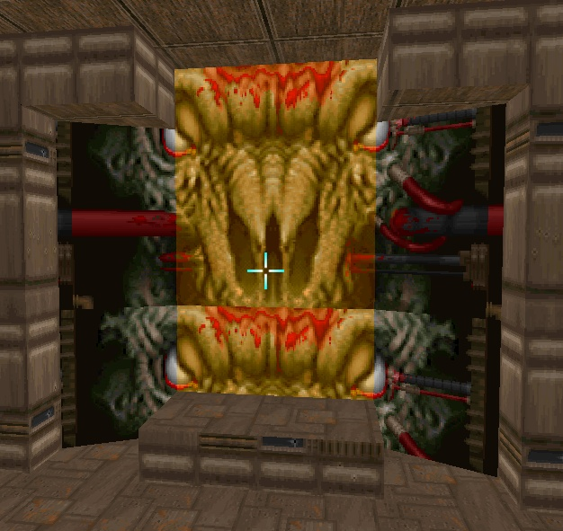
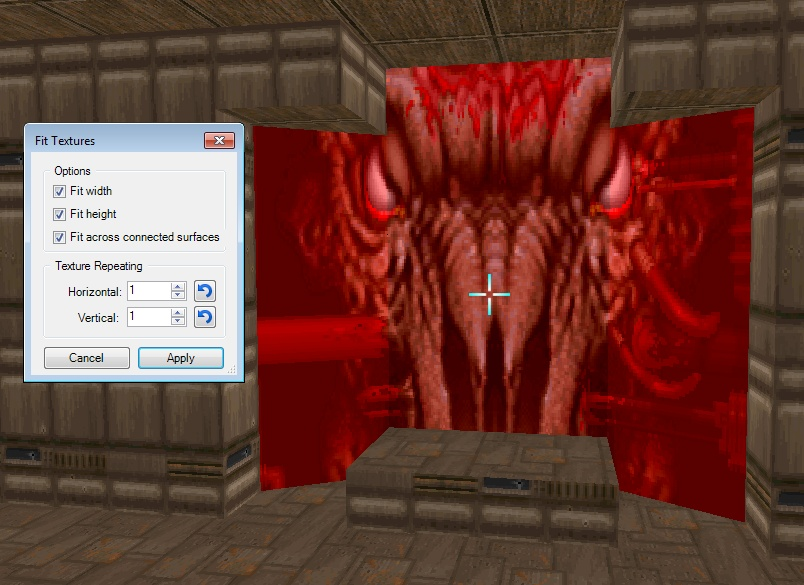

Action names: Fit Texture, Fit Texture's Width, Fit Texture's Height
Action category: Visual Modes.
Default keys: Ctrl-Alt-A, Alt-A, Alt-Shift-A.
Example:
Initial scaling:

After "Fit Texture's Width" action:

After "Fit Texture's Height" action:

After "Fit Texture" action: